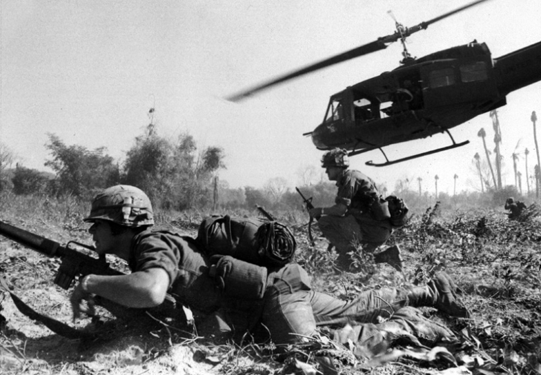

WAR AND HISTORY TOURISM

Vietnam’s turbulent history is preserved through museums, memorials, and historic sites. Exploring these locations gives visitors an in-depth understanding of the nation’s struggles, resilience, and cultural evolution.
1. War Memorials and Museums
Vietnam has preserved its turbulent history through numerous museums and memorials, which provide powerful educational experiences.
| War Remnants Museum (HCMC) | Vietnam Military History Museum (Hanoi) | Independence Palace |
| Displays military equipment, photographs, and stories from the Vietnam War, highlighting both military strategies and civilian impacts. Exhibits include tanks, helicopters, and poignant photography of wartime life. | Traces Vietnam’s military past from ancient dynasties to modern conflicts, including colonial wars, the First Indochina War, and the Vietnam War. | Site of the fall of Saigon in 1975, with preserved rooms, war maps, and military communication systems. Visitors can see firsthand where history turned. |
These sites allow tourists to understand the human cost of war, Vietnam’s resilience, and the strategic evolution of conflicts.
2. Historical Sites from the Vietnam War
Tourists can visit locations where significant battles and wartime activities took place, often with immersive experiences.
| Cu Chi Tunnels | Vinh Moc Tunnels | Ben Hai River / DMZ |
| A vast underground network used by Viet Cong soldiers, complete with living quarters, kitchens, and secret passages. Tourists can crawl through sections to understand guerrilla warfare techniques. | Sheltered civilians during heavy bombing campaigns, illustrating how communities survived under extreme conditions. | Served as the dividing line between North and South Vietnam. Visitors can explore bunkers, historical bridges, and memorials. |
These sites allow visitors to physically experience wartime strategies and appreciate the resilience and ingenuity of both soldiers and civilians.
3. French Colonial Heritage
Vietnam’s modern history is shaped by French colonization, visible through architecture and cultural sites.
| Hanoi & Ho Chi Minh City Streets | Notable Structures | Colonial History Tours |
| Streets lined with French-style buildings, including government offices, opera houses, cathedrals, and villas. | Hanoi Opera House, Saigon Notre-Dame Cathedral, and Central Post Office reflect European influence while blending with local aesthetics. | Guides explain how French occupation impacted education, urban planning, and cuisine, offering insight into the fusion of cultures. |
These sites contextualize Vietnam’s struggle for independence and highlight the cultural legacies left behind.
4. Ancient and Imperial History
Vietnam’s history is not only about modern conflicts—its imperial and ancient periods are rich with heritage.
| Imperial City of Hue | My Son Sanctuary | Thang Long Imperial Citadel |
| Former Nguyen Dynasty capital, featuring palaces, shrines, royal tombs, and citadel walls. Tours include stories of emperors, dynastic politics, and court ceremonies. | Ancient Cham temples, reflecting Hindu influence and Vietnam’s pre-colonial civilization. The site offers insight into architecture, religion, and ancient trade routes. | A UNESCO site with remnants from multiple dynasties, displaying artifacts, ceremonial halls, and defensive structures. |
This topic allows tourists to connect war history with Vietnam’s broader historical narrative, showing how dynasties, invasions, and rebellions shaped the nation.
5. War-themed Tours and Reenactments
For immersive experiences, Vietnam offers tours that recreate or interpret wartime experiences.
| Battlefield & Bunker Tours | Veteran Storytelling | Mekong Delta War Routes |
| Guides take visitors to key battlegrounds, military bases, and hidden bunkers, explaining strategies, weapons, and troop movements. | Some tours include first-hand accounts from surviving veterans, giving personal insights into hardships, resilience, and the civilian experience. | Boat tours show how rivers were used for transport, ambushes, and supply lines during wartime. |
These activities allow tourists to experience history interactively, combining education, empathy, and a deeper understanding of the nation’s struggles.